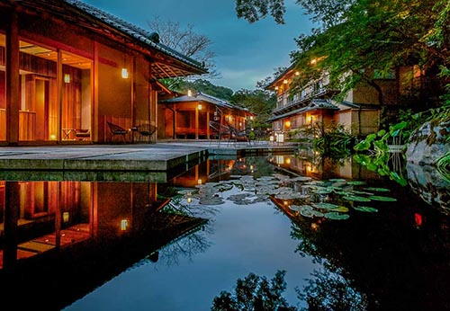
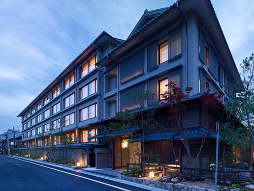

Kyoto Vacation Packages

Zen Escape in Arashiyama
Spend 4 days among Kyoto's most serene sites including the iconic Bamboo Grove and Tenryu-ji Temple.
Hotel: HOSHINOYA Kyoto
Rental Car: Nippon Rent-A-Car (Hybrid Sedan)
Cost: $1,250 per person

Cultural Gion Retreat
Experience geisha culture, tea ceremonies, and historic ryokans in the heart of Kyoto's old town.
Hotel: Hotel The Celestine Kyoto Gion
Rental Car: Toyota Rent-A-Car (Luxury Compact)
Cost: $1,450 per person
Shrines & Spirits Tour
Wander the thousands of torii gates at Fushimi Inari and sip sake in Fushimi’s historic district.
Hotel: Hotel Granvia Kyoto
Rental Car: Toyota Rent-A-Car (Economy SUV)
Cost: $1,100 per person